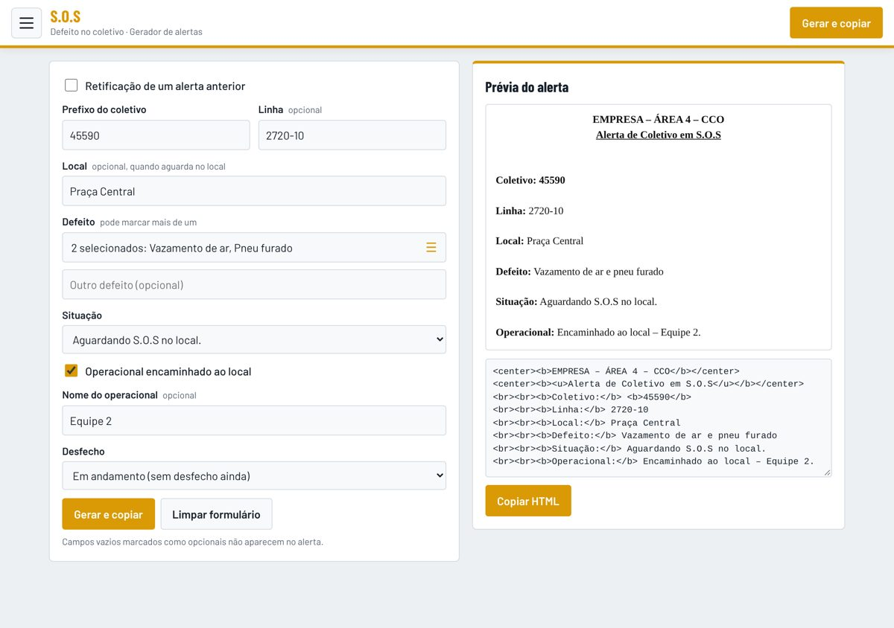

Gerador de Alertas CCO
HTMLCSSJavaScriptUso realFormulários guiados que transformam cada ocorrência da frota (S.O.S, acidente, interferência na via) em um alerta padronizado, pronto para colar no sistema, no e-mail e no WhatsApp.
- Um único arquivo, funciona offline e sem instalação
- Validação de CPF e placa, atalhos de teclado e modo escuro
- Login por operador com perfil criptografado, compartilhado na rede